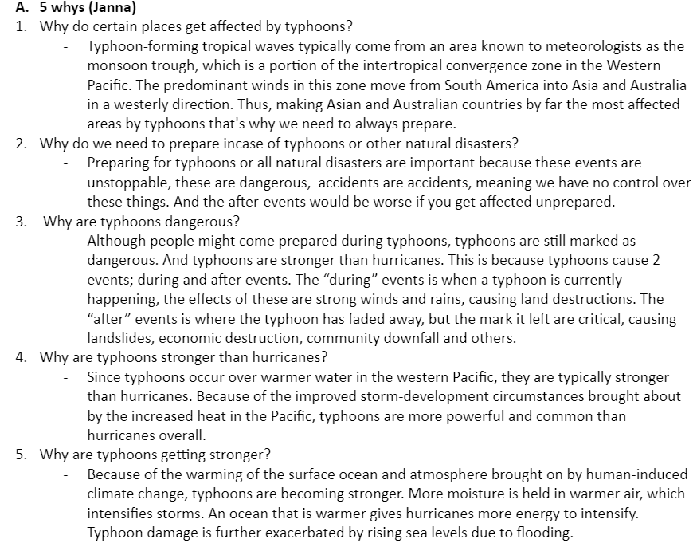
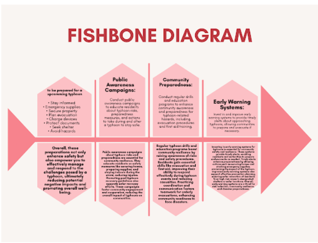
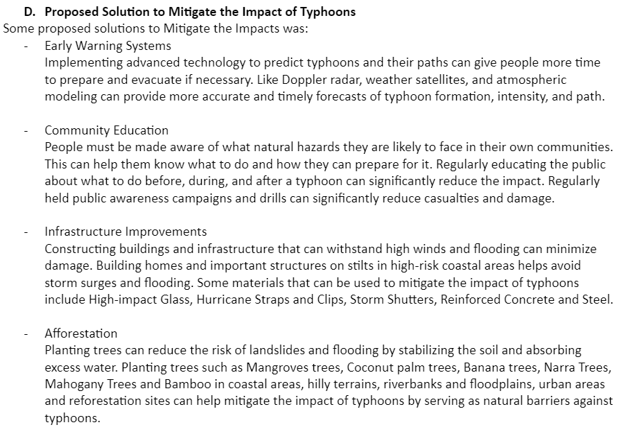

Typhoons are natural disasters that we can't avoid. The best thing we can do is to mitigate the impacts of typhoons.
 After brainstorming, here were the proposed solutions we came up with.
• Community Education Community Education People must be made aware of what natural hazards they are likely to face in their own communities. This can help them know what to do and how they can prepare for it. Regularly educating the public about what to do before, during, and after a typhoon can significantly reduce the impact. Regularly held public awareness campaigns and drills can significantly reduce casualties and damage.